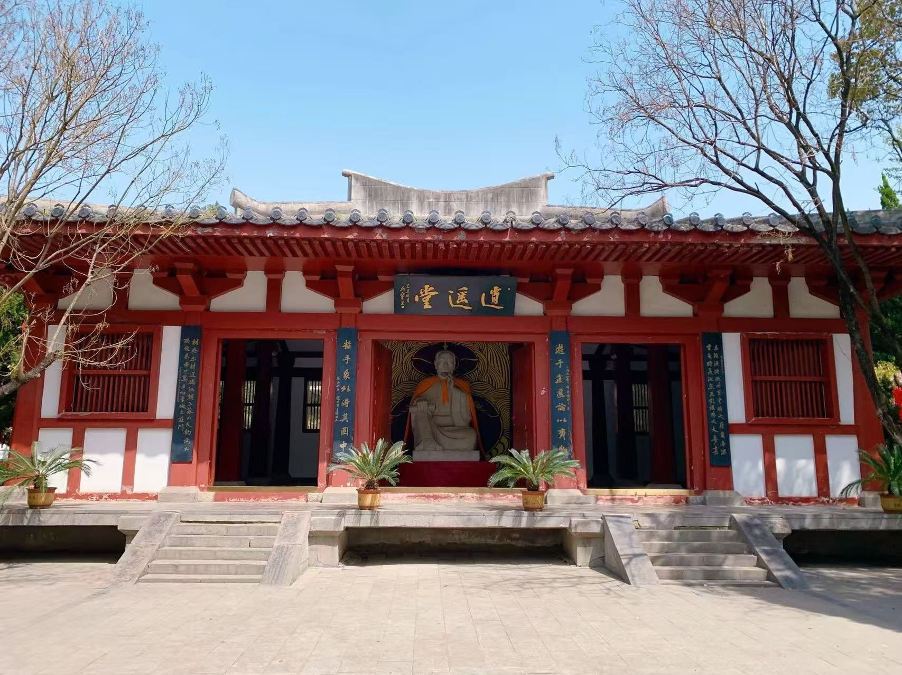
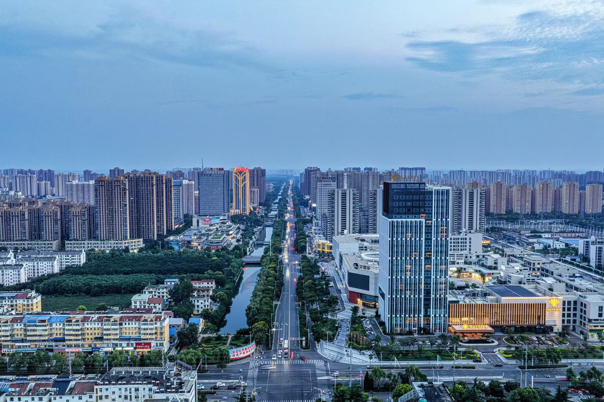
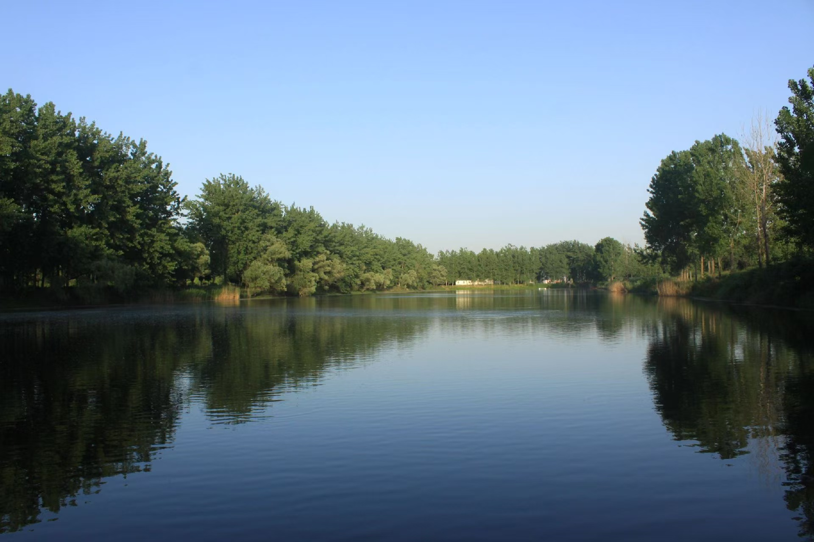
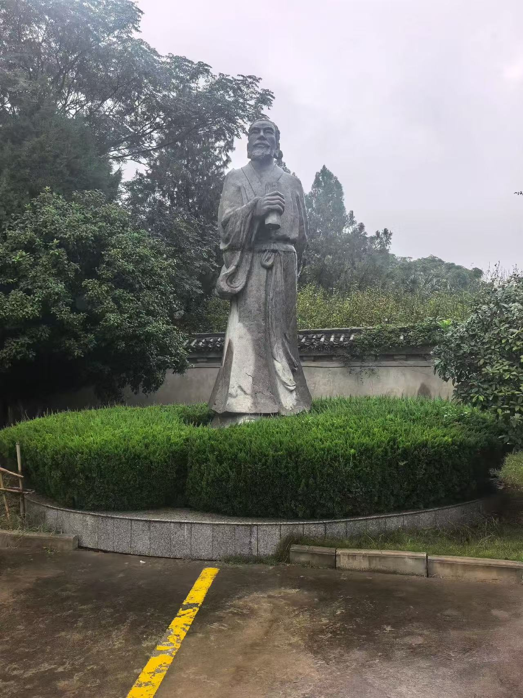
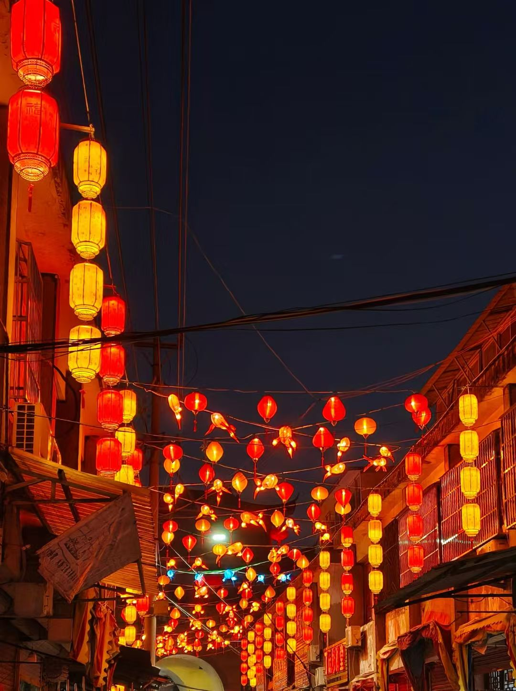
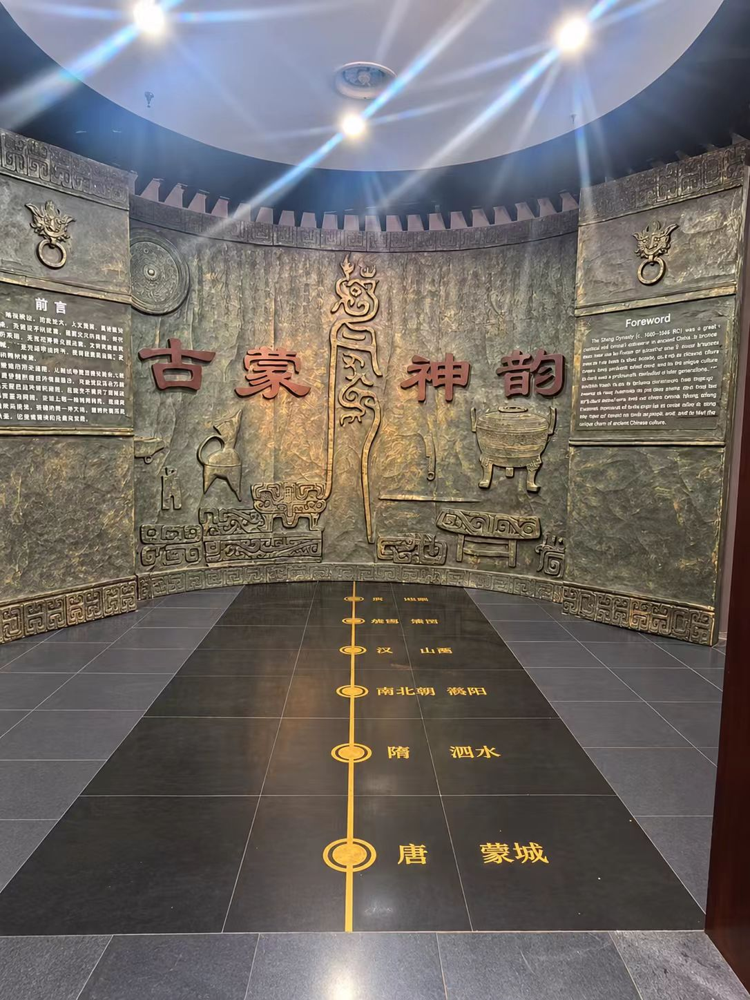

蒙城县位于安徽省西北部，隶属于亳州市，地处淮北平原腹地，涡河穿城而过。 这里历史悠久、文化底蕴深厚，因与庄子文化渊源深厚而素有"庄子故里"之誉。 千百年岁月沉淀出独特的民俗风情与人文气质，近年来城市面貌日新月异， 生态风光优美宜人，是一座古老与现代交融、充满活力的城市。

蒙城人杰地灵、民风淳朴，庄子文化与楹联雅好代代相传，街头巷尾书香与烟火气交织。清晨一碗热气腾腾的sa汤，配上金黄酥脆的油酥烧饼，便是蒙城人最寻常的生活滋味。走进蒙城，便能感受到深厚的人文底蕴与温暖的人间气息。

近年来，蒙城坚持高质量发展，城市建设日新月异：道路桥梁四通八达，教育医疗、商业配套不断完善，产业园区蓬勃发展，城乡面貌焕然一新。经济发展稳步向前的同时，蒙城注重生态与民生协同推进，努力打造宜居宜业的现代化城市，让每一位蒙城人共同见证家乡的崭新变化。

蒙城地处平原，涡河两岸水清岸绿、沃野千里。城市公园与河畔绿地相互点缀，四季景色各有韵味：春日菜花烂漫，夏日绿荫蝉鸣，秋日稻浪翻金，冬日薄雾如纱。自然风光与城市生活和谐相融，尽显"城在景中、人在画中"的生态之美。
蒙城历史悠久，人文荟萃，因庄子文化而闻名，民俗风情浓郁，文化遗存丰富，是一座底蕴深厚的文化之城。

庄子雕像
蒙城与庄子文化有着深厚的联系，素有"庄子故里"之誉。相传庄子曾在此任漆园吏、著书立说，其思想源远流长。《逍遥游》《齐物论》等名篇以汪洋恣肆的笔触，阐述逍遥自在、顺应自然的哲学智慧，是中国传统文化的重要组成部分，对后世的哲学思想、文学艺术乃至生活方式产生了深远影响。今天的蒙城，仍以庄子文化为底蕴，让这份跨越两千余年的思想遗产生生不息。

古街灯会 · 民俗节庆
蒙城拥有丰富的地方民俗和传统文化资源。从年节庙会到婚丧嫁娶，从民间曲艺到传统手工艺，当地群众在长期的生产生活中形成了独具特色的文化传统。书法、楹联等雅好在蒙城蔚然成风，民间艺人代代相传，一粥一饭、一歌一曲之间，处处透着蒙城人质朴乐观的生活态度。

古蒙神韵 · 历史文化展厅
保护历史文化资源、传承优秀传统文化，是蒙城文化建设的重要内容。当地持续加强对庄子文化、民俗技艺和古建遗存的整理与保护，推动传统文化进校园、进社区，让更多年轻人了解蒙城的历史与城市魅力，让优秀传统文化在新时代焕发新的生机。
蒙城风光秀丽，既有恬静的田园自然景观，也有蓬勃的现代城市风貌，一城之内古今交融、动静相宜。
蒙城地处淮北平原，地势平坦开阔，田园风光秀美。涡河等河流穿行其间，两岸良田沃野、村庄错落，春夏麦浪起伏、绿意盎然，金秋稻谷飘香、一派丰收景象。漫步乡间小道，远离喧嚣，感受宁静悠闲的田园生活氛围，别有一番惬意。
今天的蒙城，城市建设日新月异。宽阔整洁的街道、鳞次栉比的楼宇、绿意盎然的公园广场，共同勾勒出城市发展的新面貌；城内的宋代万佛古塔静静矗立，见证着岁月的沧桑与城市的蜕变。夜幕降临，华灯初上，城市轮廓倒映在涡河水面，动静之间尽显现代城市的活力与温情。
蒙城四季分明，自然风光各具韵味：春日菜花金黄烂漫，夏日河畔绿柳成荫，秋日天高云淡、稻浪翻金，冬日薄雾轻笼、别有诗情。优美的生态环境与城市生活相得益彰，让人们在繁忙之余也能亲近自然，体验生态之美。
| 蒙城主要景点信息一览 | |||
|---|---|---|---|
| 类别 | 景点名称 | 特色看点 | 最佳游览季节 |
| 历史古迹 | 万佛塔 | 宋代砖塔，静静见证千年沧桑 | 四季皆宜 |
| 庄子祠 | 纪念庄子的文化殿堂 | 春秋两季 | |
| 自然风光 | 涡河两岸 | 水清岸绿，田园风光秀美 | 春夏两季 |
| 田野乡间 | 麦浪稻花，四季景致分明 | 春秋两季 | |
| 温馨提示：以上景点均位于蒙城县境内，欢迎实地游览体验。 | |||
欢迎留下你对蒙城的印象、建议与美好祝福，让我们一同为蒙城的发展献计献策。